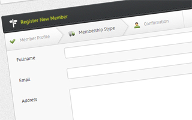

MWS Admin - Full Featured Admin Template
- Created: 01/27/2012
- latest Update: 05/22/2012
- By: maimairel
- Email: maimairel@yahoo.com
Hi there, thank you for purchasing this theme. If you have any questions that are beyond the scope of this documentation, please feel free to contact me via the comment section or email me at maimairel@yahoo.com Thanks.
Introduction
Introduction
MWS Admin is a responsive admin template build exclusively for sale at Theme Forest, and it aims to be full featured while keeping everything simple and straight forward.
Key Features
Responsive design. This template looks great on any device, whether it's desktop, tablets or mobile phones.
This template's look and feel can be freely customized by changing the base colors, text colors and text glow color and opacity. Just choose the colors to your liking, or choose any from the predefined presets, and click 'Get CSS' to get the necessary css code. This all can be done with the help of the included Themer.

This template includes an unique, sleek toolbar, aiming to provide easy access to the most common functions you can find in an admin template, like deleting a user, accepting requests and many more...
MWS Admin includes 2000+ icons, selected carefully to suit everything you need in an admin template.
Fully styled jQuery-UI widgets, which colors can be customized through the Themer.
Colorfull, interactive CSS 3 buttons
Simple and uniquely designed error page template
Complete Feature List
- Fluid Layout
- Responsive Design (Looks great on desktops, tablets and phones)
- Two Columns
- Error Page Template
- MWS Themer, a feature to customize this template's look and feel to match your site
-
2000+ Icons
- jQuery-UI Standard Icons
- IconSweets (http://www.yummygum.com)
- Led Icons (http://led24.de/iconset/)
- Fatcow Icons (http://www.fatcow.com/free-icons)
-
19 Plugins Integrated and Styled
- Colorpicker
- File Manager (elFinder)
- WYSIWYG Editor (elRTE)
- Flot Charts
- Calendar
- Growl Notifications
- Image Cropper (imgareaselect)
- File Uploader (plupload)
- Source Code Highlighter
- UI Spinner
- Tooltips
- Data Tables
- Dual List Box
- Styled File Inputs
- Input Placeholder for non HTML 5 browsers
- Validation Plugin (jquery.validate)
- jQuery Chosen Plugin
- jQuery prettyPhoto plugin
- jQuery-UI timepicker addon
-
One custom plugin
- mwsWizard, a custom build wizard plugin that is easy to use and integrate
-
Fully styled jQuery-UI widgets (works on touch devices)
- Autocomplete
- Datepicker
- Accordion
- Tabs
- Sliders
- Progress Bar
- Dialog
- Buttonsets
- Message and Notification dropdown list
- Fluid 8 grid layout (responsive to grid level only, to accomodate small screens)
-
Panel Styles
- Panel content with padding
- Panel content without padding
- Collapsible Panels
-
Four Build in widgets
- Fancy statistics style (with icons)
- Wizard navigation (can be integrated into forms, or anything you want)
- Integrated smart wizard style for wizard navigation
- Sleek, unique toolbar to fit all your needs
- Pagination
- Colorful, interactive CSS 3 Buttons (red, blue, green, orange, black, gray)
- Website Summary List
-
Form layouts and sizes
- Inline form layout
- Block form layout
- Columned form layout
- Three different input sizes (small, default, large)
-
Error messages
- Below the form input
- As a summary on top of the form
HTML Structure
This template has three sections, the header, the sidebar, and the main container.
- Logo
- Notifications and Messages
- User Functions (Logout, Change Password, Profile)
- Search Box
- Main Navigation
- Container contains all the necessary codes
The header structure is as follows:
<div id="mws-header" class="clearfix">
<!-- Logo Wrapper -->
<div id="mws-logo-container">
<div id="mws-logo-wrap">
<img src="images/logo.png" alt="mws admin" />
</div>
</div>
<!-- User Area Wrapper -->
<div id="mws-user-tools" class="clearfix">
<!-- User Notifications -->
<div id="mws-user-notif" class="mws-dropdown-menu">
<a href="#" class="mws-i-24 i-alert-2 mws-dropdown-trigger">
Notifications
</a>
<span class="mws-dropdown-notif">35</span>
<div class="mws-dropdown-box">
<div class="mws-dropdown-content">
<ul class="mws-notifications">
<!-- Here Goes all the notifications -->
</ul>
<div class="mws-dropdown-viewall">
<a href="#">View All Notifications</a>
</div>
</div>
</div>
</div>
<!-- User Messages -->
<div id="mws-user-message" class="mws-dropdown-menu">
<a href="#" class="mws-i-24 i-message mws-dropdown-trigger">Messages</a>
<span class="mws-dropdown-notif">35</span>
<div class="mws-dropdown-box">
<div class="mws-dropdown-content">
<ul class="mws-messages">
<!-- Here goes all the messages -->
</ul>
<div class="mws-dropdown-viewall">
<a href="#">View All Messages</a>
</div>
</div>
</div>
</div>
<!-- User Functions -->
<div id="mws-user-info" class="mws-inset">
<div id="mws-user-photo">
<img src="example/profile.jpg" alt="User Photo" />
</div>
<div id="mws-user-functions">
<div id="mws-username">
Hello, John Doe
</div>
<ul>
<li><a href="#">Profile</a></li>
<li><a href="#">Change Password</a></li>
<li><a href="index.php">Logout</a></li>
</ul>
</div>
</div>
<!-- End User Functions -->
</div>
</div>
The main structrure is as follows:
<div id="mws-wrapper">
<!-- Necessary markup, do not remove -->
<div id="mws-sidebar-stitch"></div>
<div id="mws-sidebar-bg"></div>
<!-- Sidebar Wrapper -->
<div id="mws-sidebar">
<!-- Search Box -->
<div id="mws-searchbox" class="mws-inset"></div>
<!-- Main Navigation -->
<div id="mws-navigation">
<ul>
<li><a href="#">Navigation</a></li>
</ul>
</div>
<!-- End Navigation -->
</div>
<!-- Container Wrapper -->
<div id="mws-container" class="clearfix">
<!-- Main Container -->
<div class="container">
</div>
<!-- End Main Container -->
<!-- Footer -->
<div id="mws-footer">
Copyright Your Website 2012. All Rights Reserved.
</div>
<!-- End Footer -->
</div>
<!-- End Container Wrapper -->
</div>
CSS Files
This template consists of base stylsheets, main stylesheets, font stylesheet, icon stylesheets, jquery-ui stylesheets and plugin stylesheets.
Base Stylsheets
Base stylesheets are required for this template. This includes the fluid grid system and the css to reset browser specific styles so this template will look the same on all browsers.
- fluid.css (the fluid grid system css)
- reset.css (css reset)
- text.css (typography)
Main Stylesheets
The main stylesheet is separated into several files, each mean to style a particular content of this template.
This is a list of the main stylesheets which are located in css/core
- core.css (contains all the core styles navigation, sidebar, etc.)
- button.css (contains button styles)
- error.css (contains error page styles)
- form.css (contains form layout styles)
- gallery.css (contains gallery styles)
- login.css (contains login screen styles)
- misc.css (contains pagination, toolbar, wizard and summary styles)
- panels.css (contains panel styles)
- report.css (contains statistics and report styles)
- table.css (contains table styles)
- themer.css (contains Themer style, you may remove this)
It's recommended to include them all in all your pages, or just merge them into one file. Separation is meant to ease understanding and use of each file.
To ease inclusion of these files, just include css/mws.style.css, which already import all these css files
@import url("core/login.css");
@import url("core/core.css");
@import url("core/panels.css");
@import url("core/table.css");
@import url("core/gallery.css");
@import url("core/button.css");
@import url("core/report.css");
@import url("core/form.css");
@import url("core/error.css");
@import url("core/misc.css");
@import url("core/themer.css"); /* remove this line if you don't need the themer */
Font Stylesheets
This template includes PTSans, a font from Font Squirrel which is used in the whole template.
Icon Stylesheets
This template includes three icon sizes (16 x 16, 24 x 24, and 32 x 32)
Each icon has its own class defined in each stylesheet in css/icons
jQuery-UI Stylesheets
jQuery-UI stylesheets are located in css/jui
Just include css/jui/jquery.ui.css to use the jquery-ui styles.
Plugin Stylesheets
Plugin stylesheets are located in each plugin folder in plugins/, more detailed explanation can be found in the plugins section.
JavaScript Files
This template has four build in javascript files:
- js/jquery-1.7.1.min.js (required javascript framework, jQuery)
- js/mws.js (the core , required javascript file to get the template working right)
- js/themer.js (the javascript file for this template's color chooser)
Using Icons
This template contains 2000+ monochrome and color icons.
There are four types of icons you can use.
jQuery-UI Icons
This icon set is used in this template for jQuery-UI widgets.
You can use them yourself as a standary jQuery-UI icon by using the provided class name which can be found in jQuery-UI, eg:
<span class="ui-icon ui-icon-info"></span>
Led Icons (16 x 16)
This icon set is mean to be used in this template for toolbars and wizard navigations.
To use this icon set yourself, you need to do the following steps:
-
Create a HTML element
<div></div>
-
Set class attribute to 'mws-ic-16'
<div class="mws-ic-16"></div>
- See the icons page in the demo, hover the icon you want, and remember its class
-
Give the element that class
<div class="mws-ic-16 i-accept"></div>
IconSweets (24 x 24)
This icon set is mean to be used in this template for navigation and panel title icon.
To use this icon set yourself, you need to do the following steps:
-
Create a HTML element
<div></div>
-
Set class attribute to 'mws-i-24'
<div class="mws-i-24"></div>
- See the icons page in the demo, hover the icon you want, and remember its class
-
Give the element that class
<div class="mws-i-24 i-abacus"></div>
Fatcow Icons (32 x 32)
This icon set is mean to be used in this template for statistics summary.
To use this icon set yourself, you need to do the following steps:
-
Create a HTML element
<div></div>
-
Set class attribute to 'mws-ic'
<div class="mws-ic"></div>
- See the icons page in the demo, hover the icon you want, and remember its class
-
Give the element that class
<div class="mws-ic ic-accept"></div>
Using Panels
This template's content area is divided into panels.
A panel can be collapsible and is used to display widgets, tables, forms, text, charts etc.
A panel is divided into grids using the fluid grid system (an extension of 960gs).
Here is the general panel structure:
<!-- Panel Wrapper -->
<div class="mws-panel grid_4">
<!-- Panel Header -->
<div class="mws-panel-header">
<!-- Panel Title -->
<span class="mws-i-24 i-text-styling">Toolbar (Top)</span>
</div>
<!-- Panel Body -->
<div class="mws-panel-body">
</div>
</div>
Structure Explanation
Panel Wrapper
Panel wrapper has a class attribute 'mws-panel grid_4'
'grid_4' means that this panel is panel which fill 4 grids of the 8 available, so it's 50% of the container's width.
Panel Header
Panel header has a class attribute 'mws-panel-header', and a panel header will contain the panel title
Panel Title
Panel title is the title of the panel. A panel title can have an icon, which can be customized by the class attribute.
From the code above, the panel title has the class attribute 'mws-i-24 i-text-styling'. This class attribute is explained at the icons section.
Panel Body
Panel body contains everything. From widgets, tables, toolbars, charts, forms etc.
Making Panels Collapsible
To make a panel collapsible, add the css class 'mws-collapsible' to the panel wrapper, eg:
<div class="mws-panel grid_4 mws-collapsible"></div>
Using Widgets
This template has four build in widgets: toolbar, wizard navigation, pagination and statistic buttons.
Toolbar
Toolbar is an area that contains button links. With this toolbar, you can easily integrate any functions in your application. A toolbar can be placed at the top or the bottom of a panel.

The HTML structure for toolbar is pretty straight forward, just an unordered list with links.
<div class="mws-panel-toolbar top clearfix">
<ul>
<li><a href="#" class="mws-ic-16 ic-accept">Accept</a></li>
<li><a href="#" class="mws-ic-16 ic-cross">Reject</a></li>
<li><a href="#" class="mws-ic-16 ic-printer">Print</a></li>
<li><a href="#" class="mws-ic-16 ic-arrow-refresh">Renew</a></li>
<li><a href="#" class="mws-ic-16 ic-edit">Update</a></li>
</ul>
</div>
If you place the toolbar at the top, give it the class attribute 'top', else give it the class attribute 'bottom'.
Notice that 'clearfix' is required for this widget to look right.
To use this widget, you need to include css/core/misc.css
Wizard Navigation
Wizard navigation can be used to show steps on some particular process, eg: registration, checkout proccess etc.
The goal of this wizard navigation is to provide style on steps navigation, which is commonly found in web application as an unordered list.

The HTML structure of wizard navigation is pretty straight forward:
<div class="mws-wizard-nav clearfix">
<ul>
<li>
<a class="mws-ic-16 ic-accept" href="#">Member Profile</a>
</li>
<li class="current">
<a href="#" class="mws-ic-16 ic-delivery">Membership Stype</a>
</li>
<li>
<a class="mws-ic-16 ic-user" href="#">Confirmation</a>
</li>
</ul>
</div>
Notice that 'clearfix' is required for this widget to look right.
To use this widget, you need to include css/core/misc.css
Notice: Since v1.6, there's a new jquery plugin added that can work seamlessly with this widget.
Pagination
Pagination is just a common pagination found in every website.
The HTML structure for pagination is an unordered list with links:
<div class="mws-pagination clearfix">
<ul>
<li><a href="#" class="mws-paging-button disabled">First</a></li>
<li><a href="#" class="mws-paging-button disabled">Prev</a></li>
<li><a href="#" class="mws-paging-button current">1</a></li>
<li><a href="#" class="mws-paging-button">2</a></li>
<li><a href="#" class="mws-paging-button">3</a></li>
<li><a href="#" class="mws-paging-button">4</a></li
<li><a href="#" class="mws-paging-button">5</a></li>
<li><a href="#" class="mws-paging-button">Next</a></li>
<li><a href="#" class="mws-paging-button">Last</a></li>
</ul>
</div>
Each link can have three states: disabled, active and current (see the class attributes on the code above).
Notice that 'clearfix' is required for this widget to look right.
To use this widget, you need to include css/core/misc.css
Statistic Button
Statistic button is a clickable widget to display statistical values like new members, registrations, etc.
The HTML structure is a wrapper containing links with text and icons:
<div class="mws-report-container clearfix">
<!-- Link -->
<a class="mws-report" href="#">
<!-- Icon -->
<span class="mws-report-icon mws-ic ic-building"></span>
<!-- Content -->
<span class="mws-report-content">
<!-- Title -->
<span class="mws-report-title">Floors Climbed</span>
<!-- Value -->
<span class="mws-report-value">324</span>
</span>
</a>
</div>
To use this widget, you need to include css/core/report.css
The icon of each button can be customized by editing this line:
<!-- Icon --> <span class="mws-report-icon mws-ic ic-building"></span>
which is explained on 'using icons' section.
Styling Forms
Forms, can be styled in three ways:
- As an inline form, which has labels on the left side of the input
- As a block form, which has labels on top of the input
- As a columned form, which has form inputs in columns
Form HTML Structure:
<form class="mws-form">
<div class="mws-form-block">
<div class="mws-form-row">
<label></label>
<div class="mws-form-item">
<textarea></textarea>
</div>
</div>
</div>
<div class="mws-button-row">
</div>
</form>
The markup above, will result in a block form layout. To get inline form layout, change
<div class="mws-form-block"></div>
to
<div class="mws-form-inline"></div>
By not wrapping the form rows with either 'mws-form-block' or 'mws-form-inline', the form will be a block form, which is the default layout.
Using Columned Form
Columned form divides the area in eight columns, so you can have columns in an eight columns base (col-1-8, col-2-8, col-3-8, col-4-8, col-5-8, col-6-8, col-7-8, col-8-8).
To use the columned layout, you have to replace each form row with a column, wrap it in a div with the class 'mws-form-cols', so the code would look like this:
<div class="mws-form-cols clearfix">
<div class="mws-form-col-1-8">
<label>Column 1/8</label>
<div class="mws-form-item large">
<input type="text" class="mws-textinput" />
</div>
</div>
<div class="mws-form-col-1-8">
<label>Column 1/8</label>
<div class="mws-form-item large">
<input type="text" class="mws-textinput" />
</div>
</div>
<div class="mws-form-col-1-8">
<label>Column 1/8</label>
<div class="mws-form-item large">
<input type="text" class="mws-textinput" />
</div>
</div>
<div class="mws-form-col-1-8">
<label>Column 1/8</label>
<div class="mws-form-item large">
<input type="text" class="mws-textinput" />
</div>
</div>
<div class="mws-form-col-1-8">
<label>Column 1/8</label>
<div class="mws-form-item large">
<input type="text" class="mws-textinput" />
</div>
</div>
<div class="mws-form-col-1-8">
<label>Column 1/8</label>
<div class="mws-form-item large">
<input type="text" class="mws-textinput" />
</div>
</div>
<div class="mws-form-col-1-8">
<label>Column 1/8</label>
<div class="mws-form-item large">
<input type="text" class="mws-textinput" />
</div>
</div>
<div class="mws-form-col-1-8">
<label>Column 1/8</label>
<div class="mws-form-item large">
<input type="text" class="mws-textinput" />
</div>
</div>
</div>
Using Fieldsets
You can also wrap the form in a 'fieldset' in place of a 'div':
<form class="mws-form">
<fieldset class="mws-form-block">
<legend>Form Legend</legend>
<div class="mws-form-row">
<label></label>
<div class="mws-form-item">
<textarea></textarea>
</div>
</div>
</fieldset>
<div class="mws-button-row">
</div>
</form>
Mixing Block and Inline Form
You can have a form with mixed layouts by just giving a form row the class 'mws-form-block' or 'mws-form-inline'.
<form class="mws-form">
<div class="mws-form-row mws-form-block"></div>
<div class="mws-form-row mws-form-inline"></div>
</form>
Form Input Size
Form inputs can have three sizes, small, medium and large. Large is the default size for form inputs.
You can control the input size by giving the class attribute 'small', 'medium', or 'large' to the form item wrapper.
<div class="mws-form-item large">
<input type="text" />
</div>
Form List
You can create a vertical list of form elements like radio buttons, checkboxes and event text fields using unordered list with the class attribute 'mws-form-list'
<form class="mws-form">
<div class="mws-form-block">
<div class="mws-form-row">
<label></label>
<div class="mws-form-item">
<ul class="mws-form-list">
<li><input type="radio" name="gender" /> <label>Male</label></li>
<li><input type="radio" name="gender" /> <label>Female</label></li>
</ul>
</div>
</div>
</div>
<div class="mws-button-row">
</div>
</form>
An inline, horizontal list can also be created by giving an additional class name, 'inline' to the unordered list.
<ul class="mws-form-list inline"></ul>
Form Input Styling
For textarea, select, radio and checkbox fields, you don't have to add any class attribute.
For text fields, you'll have to add the css class 'mws-textinput' to get them styled.
Form Messages
Form messages can be an info message, an error message, a warning message and a success message.

The base css class for all messages is 'mws-form-message', just add 'error', 'success', 'info', or 'warning' to get different error messages.
HTML structure:
<div class="mws-form-message error"></div> <div class="mws-form-message success"></div>
Stylesheet Location
The stylesheet of the form and its messages can be found in css/core/form.css
Custom Plugins
Since v1.6, a new custom plugin has been integrated into this template.
mwsWizard
mwsWizard is a custom build jQuery plugin that's intended to work with the build in wizard navigation widget.
This plugin will transform a set of elements into a step-by-step wizard.
What this plugin does is hiding the inactive steps, help validating the form before proceeding, add and control the form buttons on the bottom. The navigation on top will get automatically styled between steps.
Validation is possible using this plugin along with jquery validation plugin, please refer the demo pages to see how it works :)
Plugin Integration
Using this plugin requires you to include /js/core/mws.wizard.js, without any additional stylesheets because the wizard navigation itself is already integrated into the core styles.
-
Create your form, wrap the elements from the next steps inside this form
<form id="mws-wizard-form" class="mws-form"> </form>
-
Start by declaring the wizard navigation as instructed on the Using Widgets section, and make the anchor tags point to the step id's. Example:
<div class="mws-wizard-nav clearfix"> <ul> <li> <a class="mws-ic-16 ic-accept" href="#step-1">Member Profile</a> </li> <li> <a class="mws-ic-16 ic-delivery" href="#step-2">Membership Stype</a> </li> <li> <a class="mws-ic-16 ic-user" href="#step-3">Confirmation</a> </li> </ul> </div> -
After that, define the step containers, which are fieldsets by default
<form <fieldset id="step-1" class="mws-form-inline"> </fieldset> <fieldset id="step-2" class="mws-form-inline"> </fieldset> <fieldset id="step-3" class="mws-form-inline"> </fieldset>
-
Next, fire up the jquery-plugin, and you're done :)
$("#mws-wizard-form").mwsWizard();
Note: on the example above, the links on the anchor tags refer to the id's of the fieldsets, make sure that you don't miss this.
This plugin is customizable, you can choose which element you want as steps, change the button text etc. it's all configurable with the following options:
| Option Name | Default | Description |
|---|---|---|
| element | fieldset | The elements inside the form to treat as form steps |
| navigationContainer | .mws-wizard-nav | The container where the navigation is wrapped in |
| buttonContainerClass | mws-button-row | The class name for the button container |
| nextButtonClass | mws-button red | The class name for the next button |
| prevButtonClass | mws-button gray left | The class name for the prev button |
| submitButtonClass | mws-button green | The class name for the submit button |
| nextButtonLabel | 'Next' | The text on the next button |
| prevButtonLabel | 'Prev' | The text on the prev button |
| submitButtonLabel | 'Submit' | The text on the submit button |
| forwardOnly | true | Whether backwards navigation is not allowed |
| onLeaveStep | null | The function to call each time leaving a step |
| onShowStep | null | The function to call each time a step is shown |
| onBeforeSubmit | null | The function to call before submitting the form |
Using Plugins
There are 15 plugins included in this template:
- Colorpicker
- File Manager (elFinder)
- WYSIWYG Editor (elRTE)
- Flot Charts
- Calendar
- Growl Notifications
- Image Cropper (imgareaselect)
- File Uploader (plupload)
- Source Code Highlighter
- UI Spinner
- Tooltips
- Data Tables
- Dual List Box
- Styled File Inputs
- Input Placeholder for non HTML 5 browsers
- Validation Plugin (jquery.validate)
- Pretty Photo plugin
- jQuery Chosen Plugin
- jQuery-UI Time Picker
All plugins are styled to work together with this template, so using the provided css files is recommended.
Colorpicker
Colorpicker is jQuery plugin by eyecon, it's a simple component to select color in the same way you select color in Adobe Photoshop.
To use colorpicker, you have to attach the necessary javascript and css files
<script type="text/javascript" src="js/jquery-1.7.1.min.js"></script> <script type="text/javascript" src="plugins/colorpicker/colorpicker.js"></script> <link rel="stylesheet" type="text/css" href="plugins/colorpicker/colorpicker.css" />
There's already a css class for text input build in this template, you can use it to get a text field with a colorpicker icon on the right side. The css class is 'mws-colorpicker'.
<input type="text" class="mws-textinput mws-colorpicker" />
For more info about this plugin, please visit http://www.eyecon.ro/colorpicker/
File Manager (elFinder)
elFinder is an open-source file manager for web, written in JavaScript using jQuery UI. As you can see its creation is inspired by simplicity and convenience of Finder program used in Mac OS X operating system.
To use elFinder, you'll have to attach jQuery-UI, the necessary javascript and css files, and configure it to your liking.
<script type="text/javascript" src="js/jquery-1.7.1.min.js"></script>
<script type="text/javascript" src="js/jquery-ui.js"></script>
<script type="text/javascript" src="plugins/elfinder/js/elfinder.min.js"></script>
<link rel="stylesheet" type="text/css" href="css/jui/jquery.ui.css" media="screen" />
<link rel="stylesheet" type="text/css" href="plugins/elfinder/css/elfinder.css" />
<script type="text/javascript">
$(document).ready(function() {
$("#elfinder").elfinder({
url : 'plugins/elfinder/connectors/php/connector.php',
lang : 'en',
docked : true,
height: 300
});
});
</script>
<div id="elfinder"></div>
elFinder also requires a connector to communicate with the server. There are two connectors included in elFinder, one for PHP and one for python. This connector is configured via the "url" option of the plugin (see above).
For more info about this plugin, please visit http://elrte.org/elfinder
WYSIWYG (elRTE)
elRTE is an open-source WYSIWYG HTML-editor written in JavaScript using jQuery UI. It features rich text editing, options for changing its appearance, style and many more.
To use elRTE, you'll have to attach jQuery-UI, the necessary javascript and css files, and configure it to your liking.
<script type="text/javascript" src="js/jquery-1.7.1.min.js"></script>
<script type="text/javascript" src="js/jquery-ui.js"></script>
<script type="text/javascript" src="plugins/elrte/js/elrte.min.js"></script>
<link rel="stylesheet" type="text/css" href="plugins/elrte/css/elrte.full.css" />
<script type="text/javascript">
var opts = {
cssClass : 'el-rte',
height : 300,
toolbar : 'normal',
cssfiles : ['plugins/elrte/css/elrte-inner.css']
};
$('#elrte').elrte(opts);
</script>
<div id="elrte"></div>
For more info about this plugin, please visit http://elrte.org/
Flot Charts
Flot is a pure Javascript plotting library for jQuery. It produces graphical plots of arbitrary datasets on-the-fly client-side.
The focus is on simple usage (all settings are optional), attractive looks and interactive features like zooming and mouse tracking.
To use flot, you'll have to add the necessary javascript file, and excanvas.js for browsers lower than IE 9.
<!--[if lt IE 9]> <script type="text/javascript" src="plugins/flot/excanvas.min.js"></script> <![endif]--> <script type="text/javascript" src="js/jquery-1.7.1.min.js"></script> <script type="text/javascript" src="plugins/flot/jquery.flot.min.js"></script> <script type="text/javascript" src="plugins/flot/jquery.flot.pie.min.js"></script> <script type="text/javascript" src="plugins/flot/jquery.flot.stack.min.js"></script> <script type="text/javascript" src="plugins/flot/jquery.flot.resize.min.js"></script>
How to configure and use flot can be read on its website (http://code.google.com/p/flot/)
The example on this template can also be used as a starting point.
Full Calendar
FullCalendar is a jQuery plugin that provides a full-sized, drag & drop calendar like the one below. It uses AJAX to fetch events on-the-fly for each month and is easily configured to use your own feed format (an extension is provided for Google Calendar).
To use full calendar you need to attach the necessary javascript and css files:
<script type="text/javascript" src="js/jquery-1.7.1.min.js"></script> <script type="text/javascript" src="plugins/fullcalendar/fullcalendar.min.js"></script> <link rel="stylesheet" type="text/css" href="plugins/fullcalendar/fullcalendar.css" media="screen" /> <link rel="stylesheet" type="text/css" href="plugins/fullcalendar/fullcalendar.print.css" media="print" />
For more info about this plugin, please visit http://arshaw.com/fullcalendar/
Growl Notifications (jGrowl)
jGrowl is an unobtrusive notification system for web applications, similar to Growl for Mac OS X. The idea is simple, deliver notifications to the end user in a noticeable way that doesn't obstruct the work flow and yet keeps the user informed.
To use jGrowl, you need to attach the necessary javascript and css files:
<script type="text/javascript" src="js/jquery-1.7.1.min.js"></script>
<script type="text/javascript" src="plugins/jgrowl/jquery.jgrowl.js"></script>
<link rel="stylesheet" type="text/css" href="plugins/jgrowl/jquery.jgrowl.css" media="screen" />
<script type="text/javascript">
$.jGrowl("Hello World!", {position: "bottom-right"});
</script>
For more info about this plugin, please visit https://bitbucket.org/stanlemon/jgrowl
Image Cropper (imgareaselect)
imgAreaSelect is a jQuery plugin for selecting a rectangular area of an image. It allows web developers to easily implement image cropping functionality, as well as other user interface features, such as photo notes (like those on Flickr).
To use imgAreaSelect, you need to attach the necessary javascript and css files:
<script type="text/javascript" src="js/jquery-1.7.1.min.js"></script>
<script type="text/javascript" src="plugins/imgareaselect/jquery.imgareaselect.min.js"></script>
<link rel="stylesheet" type="text/css" href="plugins/imgareaselect/css/imgareaselect-default.css" media="screen" />
<script type="text/javascript">
$(document).ready(function () {
$('img#photo').imgAreaSelect({
handles: true,
onSelectEnd: someFunction
});
});
</script>
For more info about this plugin, please visit http://odyniec.net/projects/imgareaselect/
There's also a tutorial for submitting the image coordinates to the server, you can find it here:
http://odyniec.net/projects/imgareaselect/examples-callback.html#submitting-selection-coordinates
File Uploader (plupload)
The developers of TinyMCE brings you Plupload, a highly usable upload handler for your Content Management Systems or similar. Plupload is currently separated into a Core API and a jQuery upload queue widget this enables you to either use it out of the box or write your own custom implementation.
To use plupload, you need to attach the necessary javascript and css files, configure your backend and initialize the plugin.
<script type="text/javascript" src="js/jquery-1.7.1.min.js"></script>
<script type="text/javascript" src="plugins/plupload/plupload.js"></script>
<script type="text/javascript" src="plugins/plupload/plupload.flash.js"></script>
<script type="text/javascript" src="plugins/plupload/plupload.html4.js"></script>
<script type="text/javascript" src="plugins/plupload/plupload.html5.js"></script>
<script type="text/javascript" src="plugins/plupload/jquery.plupload.queue/jquery.plupload.queue.js"></script>
<link rel="stylesheet" href="plugins/plupload/jquery.plupload.queue.css" />
<script type="text/javascript">
$(document).ready(function() {
$("#uploader").pluploadQueue({
// General settings
runtimes : 'html4, html5',
url : '../upload.php',
max_file_size : '1000mb',
max_file_count: 20, // user can add no more then 20 files at a time
chunk_size : '1mb',
unique_names : true,
multiple_queues : true,
// Resize images on clientside if we can
resize : {width : 320, height : 240, quality : 90},
// Rename files by clicking on their titles
rename: true,
// Sort files
sortable: true,
// Specify what files to browse for
filters : [
{title : "Image files", extensions : "jpg,gif,png"},
{title : "Zip files", extensions : "zip,avi"}
]
});
});
</script>
<div id="uploader">
<p>You browser doesn't have Flash, Silverlight, Gears, BrowserPlus or HTML5 support.</p>
</div>
For more info about this plugin, please visit http://www.plupload.com/
Sourcerer (Syntax Highlighter)
Sourcerer is AndBeyond's first official jQuery plugin available to download. Its an extremely easy to use yet powerful source code highlighter and viewer. It is able to highlight your html, javascript, css, and php in a simple JS file that is less than 150 lines.
To use sourcerer, you need to add the necessary javascript and css files
<script type="text/javascript" src="js/jquery-1.7.1.min.js"></script>
<script type="text/javascript" src="plugins/sourcerer/Sourcerer-1.2.js"></script>
<link rel="stylesheet" type="text/css" href="plugins/sourcerer/Sourcerer-1.2.css" media="screen" />
<script type="text/javascript">
$(document).ready(function() {
$(".mws-code-html").sourcerer('html');
});
</script>
<pre class="mws-code-html">
</pre>
For more info about this plugin, please visit http://www.andbeyonddesign.com/Sourcerer
jQuery-UI Spinner
This jQuery plugin has been modified by me, to utilize the jquery mousewheel plugin instead of using its own code because it wil then not work in jQuery > 1.6
To use UI Spinner, you need to add the necessary javascript and css files:
<script type="text/javascript" src="js/jquery-1.7.1.min.js"></script> <script type="text/javascript" src="js/jquery-ui.js"></script> <script type="text/javascript" src="plugins/spinner/jquery.mousewheel.js"></script> <script type="text/javascript" src="plugins/spinner/ui.spinner.js"></script> <link rel="stylesheet" type="text/css" href="plugins/spinner/ui.spinner.css" media="screen" />
Tooltips (jQuery Tipsy)
Tipsy is a jQuery plugin for creating a Facebook-like tooltips effect based on an anchor tag's title attribute.
This template integrates tooltips internally, so you only need to add the necessary javascript and css files and define the right css class for each element.
<script type="text/javascript" src="js/jquery-1.7.1.min.js"></script> <script type="text/javascript" src="plugins/tipsy/jquery.tipsy.js"></script> <link rel="stylesheet" type="text/css" href="plugins/tipsy/tipsy.css" media="screen" />
This template has eight build in classes, just add one on your element, and that element will display the tooltip when hovered.
| .mws-tooltip-nw | .mws-tooltip-n | .mws-tooltip-ne |
| .mws-tooltip-w | .mws-tooltip-e | |
| .mws-tooltip-sw | .mws-tooltip-s | .mws-tooltip-se |
For more info about this plugin, please visit http://onehackoranother.com/projects/jquery/tipsy/
Data Tables
DataTables is a plug-in for the jQuery Javascript library. It is a highly flexible tool, based upon the foundations of progressive enhancement, which will add advanced interaction controls to any HTML table.
To use datatables, you need to attach the necessary javascript file:
<script type="text/javascript" src="js/jquery-1.7.1.min.js"></script> <script type="text/javascript" src="plugins/datatables/jquery.dataTables.js"></script>
because data table styles is integrated with the core styles, you don't need to add any additional stylesheets.
For more info about data table, please visit http://datatables.net/
Dual List Box
Dual List box is a form element, which has two list where you can move the items from the first to the second list. Dual List box needs you to setup the necessary HTML structure, and then call its function to initialize it.
<script type="text/javascript" src="js/jquery-1.7.1.min.js"></script> <script type="text/javascript" src="plugins/duallistbox/jquery.dualListBox-1.3.min.js"></script>
Because dual list box is integrated into this template's core scripts, you don't need to call any function, all you need to do is setting up the necessary markup:
<div class="mws-dualbox clearfix">
<div class="mws-dualbox-col1">
<div class="mws-dualbox-filter clearfix">
<label for="box1Filter">Filter</label>
<input type="text" id="box1Filter" class="mws-textinput" />
<button type="button" id="box1Clear">X</button>
</div>
<select id="box1View" multiple="multiple" size="15">
<option value="501649">2008-2009 "Mini" Baja</option>
<option value="501497">AAPA - Asian American Psychological Association</option>
<option value="501053">Academy of Film Geeks</option>
<option value="500001">Accounting Association</option>
<option value="501227">ACLU</option>
<option value="501610">Active Minds</option>
<option value="501514">Activism with A Reel Edge (A.W.A.R.E.)</option
><option value="501656">Adopt a Grandparent Program</option>
<option value="501050">Africa Awareness Student Organization</option>
<option value="501075">African Diasporic Cultural RC Interns</option>
<option value="501493">Agape</option>
<option value="501562">AGE-Alliance for Graduate Excellence</option>
<option value="500676">AICHE (American Inst of Chemical Engineers)</option>
<option value="501460">AIDS Sensitivity Awareness Project ASAP</option>
<option value="500004">Aikido Club</option
><option value="500336">Akanke</option>
</select>
<span id="box1Counter" class="countLabel"></span>
<select id="box1Storage"></select>
</div>
<div class="mws-dualbox-col2">
<button id="to2" type="button">></button>
<button id="allTo2" type="button">>></button>
<div class="clear"></div>
<button id="allTo1" type="button"><<</button>
<button id="to1" type="button"><</button>
</div>
<div class="mws-dualbox-col3">
<div class="mws-dualbox-filter clearfix">
<label for="box2Filter">Filter</label>
<input type="text" id="box2Filter" class="mws-textinput" />
<button type="button" id="box2Clear">X</button>
</div>
<select id="box2View" multiple="multiple" size="15"></select>
<span id="box2Counter" class="countLabel"></span>
<select id="box2Storage"></select>
</div>
</div>
The markup above is customized to work with this template, so it's recommended to follow it.
For more about this plugin, please visit http://www.meadmiracle.com/dlb/DLBDocumentation.aspx
Custom File Input
File input styling utilizes jquery.fileinput.js, a file input styling plugin from filmentgroup:
http://filamentgroup.com/lab/jquery_custom_file_input_book_designing_with_progressive_enhancement/
All you need to do is attach the necessary javascript and css file, since everything is already integrated into the template.
<script type="text/javascript" src="js/jquery-1.7.1.min.js"></script> <script type="text/javascript" src="plugins/fileinput/js/jQuery.fileinput.js"></script> <script type="text/javascript" src="plugins/fileinput/css/fileinput.css"></script>
Input Placeholder
Input placeholder is a jquery plugin that helps non HTML5 browsers to support placeholders.
Since placeholder suppport is already integrated into this template, all you need to do is add the required javascript file, and define placeholder attribute at your form elements.
<script type="text/javascript" src="js/jquery-1.7.1.min.js"></script> <script type="text/javascript" src="plugins/placeholder/jquery.placeholder.js"></script>
Validation Plugin
Form validation on this template is based on the jquery validate plugin, one of the most popular jquery validation plugin available.
<script type="text/javascript" src="js/jquery-1.7.1.min.js"></script> <script type="text/javascript" src="plugins/validate/jquery.validate.js"></script>
To use the validation plugin, just add the javascript file, and define the correct class names to your form elements.
For more info about this plugin, please visit http://bassistance.de/jquery-plugins/jquery-plugin-validation/
Pretty Photo Plugin
prettyPhoto is a jQuery lightbox clone. Not only does it support images, it also support for videos, flash, YouTube, iframes and ajax. It’s a full blown media lightbox. It is very easy to setup, yet very flexible if you want to customize it a bit. Plus the script is compatible in every major browser, even IE6.
To use this plugin you need to add the necessary javascript and css files:
<script type="text/javascript" src="js/jquery-1.7.1.min.js"></script>
<script type="text/javascript" src="plugins/prettyphoto/js/jquery.prettyPhoto-min.js"></script>
<link rel="stylesheet" type="text/css" href="plugins/prettyphoto/css/prettyPhoto.css" />
$(document).ready(function(){
$("a[rel^='prettyPhoto']").prettyPhoto();
});
<a href="sample.jpg" rel="prettyPhoto"><img src="sample.jpg alt="Sample" /></a>
For more info about this plugin, please visit http://www.no-margin-for-errors.com/projects/prettyphoto-jquery-lightbox-clone/
jQuery Chosen Plugin
Chosen is a JavaScript plugin that makes long, unwieldy select boxes much more user-friendly. It is currently available in both jQuery and Prototype flavors.
To use this plugin you need to add the necessary javascript and css files, add the necessary class name to your select inputs, and activate it.
<script type="text/javascript" src="js/jquery-1.7.1.min.js"></script>
<script type="text/javascript" src="plugins/chosen/chosen.jquery.min.js"></script>
<link rel="stylesheet" type="text/css" href="plugins/chosen/chosen.css" media="screen" />
$(document).ready(function() {
$("select.chzn-select").chosen();
});
<select class="chzn-select"></select>
For more info about this plugin, please visit http://harvesthq.github.com/chosen/
jQuery-UI Time Picker
UI Time Picker is an extension of jQuery-UI datepicker. This extension allows you to select time from the datepicker control. This extension requires you to add an extra javascript and css file:
<script type="text/javascript" src="js/jquery-ui.js"></script> <script type="text/javascript" src="plugins/timepicker/timepicker-min.js"></script> <link rel="stylesheet" type="text/css" href="plugins/timepicker/timepicker.css" media="screen" />
For more info about this plugin, please visit http://trentrichardson.com/examples/timepicker/
Changelog
Version 1.6 (5/22/2012)
- Added styles for jQuery-ui buttonset
- Updated jQuery-UI to 1.8.20
- Fixed the spinner examples
- Fixed datepickers that appears behind jQuery-UI dialog
- Added datepicker on dialog modal form example
- Added a custom wizard plugin, mwsWizard
- Renamed wizard navigation class name to .mws-wizard-nav
- Removed smart wizard plugin
Version 1.5 (4/29/2012)
- Updated jQuery to 1.7.2
- DataTables plugin updated v1.9.1
- Table stylesheet updated to support DataTables 1.9.1
- Chosen updated to 0.9.8
- Fullcalendar updated to 1.5.3
- PLupload updated to 1.5.4
- prettyPhoto updated to 3.1.4
- jquery-ui timepicker addon updated to 1.0
- Moved the fileinput styling script as core script
- Renamed the file "/css/core/report.css" to "/css/core/statistic.css"
- Added table of contents on all css files
- Separated the jquery-ui folder
- Moved the jquery-ui timepicker addon into the jquery-ui folder
- Replaced placeholder plugin with a better one
- Fixed columned form error message
- Improved the responsive layout on mobile
Version 1.4 (3/24/2012)
- Wizard styling bug fixed
- Fixed dropdown messages that are not clickable
- Fixed background image bug
- Added smart wizard plugin
- Integrated the build in wizard style with smart wizard
Version 1.3 (2/19/2012)
- Fixed Login page not working on IE
- Form in jQuery-UI dialogs
- Fixed navigation disappear if searchbox removed on mobile devices
- File input error message now displays correctly
- Spinner error message now displays correctly
- Datepicker should not bring up virtual keyboard
- Themer can now change background image
-
Images optimized
- core [435,250 bytes --> 115,214 bytes]
- jui [72,348 bytes --> 8,084 bytes]
- 519 icons 16x16 [284,317 bytes --> 233,544 bytes]
- 461 icons 24x24 [227,177 bytes --> 183,807 bytes]
- 1400 icons 32x32 [2,264,409 bytes --> 2,093,238 bytes]
Version 1.2 (2/10/2012)
- Responsive Layout, this template now looks great on desktops, tablets and mobile phones
- Added column layout for forms
- Color change on hovered table rows
- Improved the login page, added validation and shake effect
- Added new form error style for radio and checkbox input
- Added jQuery-UI timepicker, an extension of the datepicker
- Panels can now be collapsed by default
- Changed the file styling plugin to jquery.fileinput
- jQuery-UI now support touch devices
- Enlarged the jQuery-UI slider handle so it will be easier to use on touch devices
- Bug and layout fixes
Version 1.1 (2/5/2012)
- Added select inputs with Chosen Plugin
- Added prettyPhoto Plugin
- Added functionality to dismiss form messages
- Improved the color chooser
- Improved the login page
Credits
Icons
IconSweets - http://www.yummgum.com
Led Icons - http://led24.de/iconset/
Fatcow Icons - http://www.fatcow.com/free-icons
Images
Envato's Asset Library - http://themeforest.net/page/asset_library
Plugins
- Colorpicker (http://www.eyecon.ro/colorpicker/)
- File Manager (elFinder - http://elrte.org/elfinder)
- WYSIWYG Editor (elRTE - http://elrte.org)
- Flot Charts (http://code.google.com/p/flot/)
- Calendar (http://arshaw.com/fullcalendar/)
- Growl Notifications (https://bitbucket.org/stanlemon/jgrowl)
- Image Cropper (imgareaselect - http://odyniec.net/projects/imgareaselect/)
- File Uploader (plupload - http://www.plupload.com/)
- Source Code Highlighter (http://www.andbeyonddesign.com/Sourcerer)
- UI Spinner (http://www.yelotofu.com/2008/07/jquery-numeric-stepper/)
- Tooltips (http://onehackoranother.com/projects/jquery/tipsy/)
- Data Tables (http://datatables.net/)
- Dual List Box (http://www.meadmiracle.com/dlb/DLBDocumentation.aspx)
- Styled File Inputs (http://filamentgroup.com/lab/jquery_custom_file_input_book_designing_with_progressive_enhancement/)
- Input Placeholder for non HTML 5 browsers
- Validation Plugin (jquery.validate - http://bassistance.de/jquery-plugins/jquery-plugin-validation/)
- jQuery Chosen Plugin (http://harvesthq.github.com/chosen/)
- jQuery Pretty Photo Plugin (http://www.no-margin-for-errors.com/projects/prettyphoto-jquery-lightbox-clone/)
- jQuery-UI Time Picker (http://trentrichardson.com/examples/timepicker/)